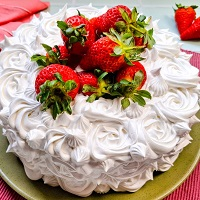

Bolo 4 Leites com Morango
Ingredientes
Massa
- 3 ovos médios (180 gramas)
- 1 xícara de chá de açúcar refinado (200 gramas)
- 1 e 1/2 xícara de farinha de trigo (210 gramas)
- 1/4 de xícara de chá de óleo (60 ml)
- 100 ml de água (em temperatura ambiente)
- 1 colher de chá de fermento químico em pó (fermento para bolo)
- Manteiga para untar
Recheio (Creme 4 Leites e Morangos)
- 1 caixa de leite condensado (395 gramas)
- 1 caixa de creme de leite (200 gramas)
- 1 garrafinha de leite de coco (200 ml)
- 1 xícara de chá de leite em pó integral (100 gramas)
- 2 bandejas de morangos (250 gramas cada)
- 4 colheres de sopa de açúcar refinado
Calda e Finalização
- 2 colheres de sopa de leite condensado
- 2 colheres de sopa de leite de coco
- 1 xícara de chá leite integral (240 ml)
- 1 xícara de chá de chantilly (250 ml)
- 1/4 de xícara de chá de leite em pó
Modo de preparo
Recheio (Creme 4 Leites)
- Em uma panela fora do fogo, misture o leite condensado e o leite em pó até incorporar, para não criar grumos.
- Adicione o leite de coco e o creme de leite e mexa bem.
- Leve ao fogo médio para baixo e cozinhe até começar a ferver. Continue mexendo por mais 20 minutos.
- Transfira o creme para um refratário, cubra com plástico-filme em contato e leve à geladeira até gelar completamente.
- Para os morangos: Pique os morangos (reserve alguns inteiros para decoração) e misture-os com as 4 colheres de açúcar. Transfira para uma peneira, deixando escorrer o líquido por 1 hora na geladeira. Seque com papel-toalha.
Massa
- Unte uma forma redonda e preaqueça o forno a 180°C.
- Na batedeira, bata as claras em neve em picos firmes.
- Adicione as gemas e o açúcar, batendo até obter um creme liso.
- Acrescente o óleo, a farinha de trigo e, com uma espátula, misture bem. Junte a água e misture novamente.
- Por fim, acrescente o fermento e misture delicadamente.
- Transfira para a forma e leve ao forno por cerca de 35 a 45 minutos (faça o teste do palito). Deixe esfriar e desenforme.
Montagem e Finalização
- Corte o bolo em 3 discos. Para a calda, misture as 2 colheres de leite condensado, 2 colheres de leite de coco e o leite integral.
- Forre a forma com plástico-filme. Coloque um disco, umedeça com a calda.
- Retire o creme 4 leites da geladeira e reserve 2 colheres de sopa dele. Misture cuidadosamente o restante do creme com os morangos escorridos.
- Coloque o recheio sobre o disco. Repita com o segundo disco e recheio.
- Finalize com o último disco, regue com a calda, cubra com o plástico e leve à geladeira por 4 a 8 horas.
- Desenforme o bolo. Para a cobertura, bata o chantilly com o leite em pó e misture as 2 colheres do recheio reservadas.
- Distribua a mistura no topo e laterais do bolo e decore com os morangos inteiros. Sirva.